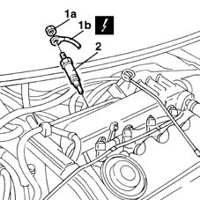

5520C10 glow plugs - r+r
- Path
- Procedures > 55 ELECTRICAL EQUIPMENT > 5520 ENGINE STARTING > 5520C cold starting system (diesel engines) > 5520C10 glow plugs - r+r
- Kind
- repair procedure (removal / refitting; the operation number is the code)
- Applies to
- engines: 1.9 JTD 8V; all production periods
- Interactive page
- https://sloeber94.github.io/elrnDB-fMltpl/en/#/2891901
Applies to: engines: 1.9 JTD 8V; all production periods
 Removing
Removing
 Refitting
Refitting1048A10 AIR CLEANER FILTERING ELEMENT - REPLACE
1016A10 sound-proofing cover - r + r
1080D34 engine oil vapour separator - r + r
1060F50 fuel return manifold - r r
1. Undo the fixing nuts (1a) and disconnect the wiring (1b) from the heater plugs.
 | Name | Connector |
|---|---|---|
1b | Heater plugs |
2. Undo and remove the heater plugs.

Applies to: engines: 1.9 JTD 8V; all production periods
Refitting
RemovingFit the heater plugs.
Connect the electrical wiring to the heater plugs.
1060F50 fuel return manifold - r r
1080D34 engine oil vapour separator - r + r
1016A10 sound-proofing cover - r + r
1048A10 AIR CLEANER FILTERING ELEMENT - REPLACE
Check the operation of the heater plugs.